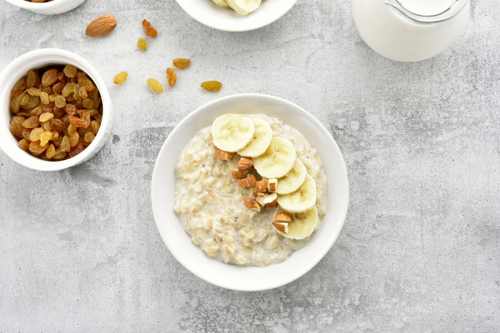
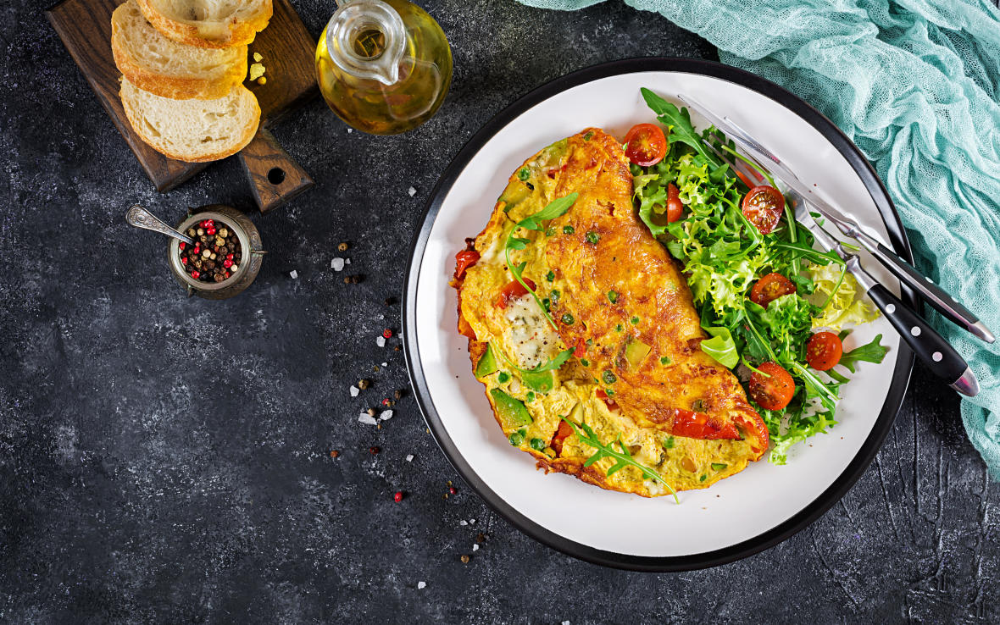
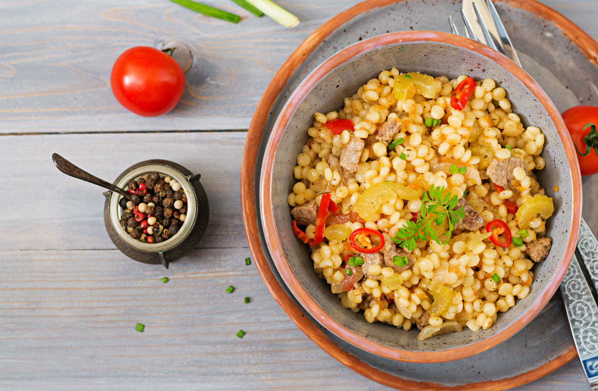
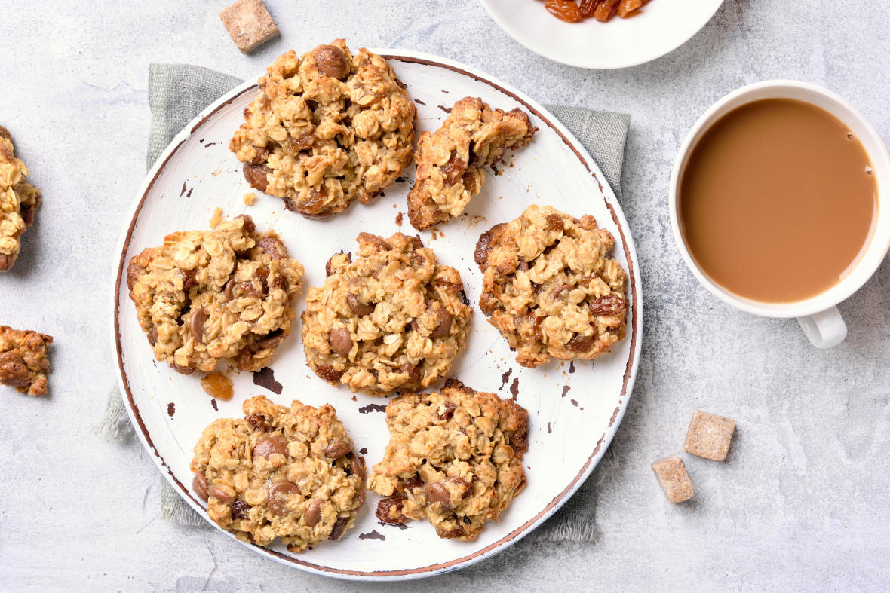

健康食譜
快速上桌的健康輕料理

烤香蕉燕麥粥
材料
- 香蕉 半條
- 燕麥 40g
- 鮮奶 300cc
- 肉桂 少許
- 鹽巴 少許
- 核桃 少許
作法
- 將半條香蕉壓成泥。
- 倒入盤中，將剩餘的香蕉片和核桃鋪在上方。
- 置於烤箱，以190℃烘烤20-25分鐘完成。
- 加上核桃點綴。
- 香甜美味的早餐上桌囉。

番茄香草歐姆蛋
材料
- 大番茄 2顆
- 雞蛋 3顆
- 香草 少許
- 鹽 少許
- 黑胡椒 少許
- 油 適量
作法
- 平底鍋熱油，加入番茄，炒至軟化變色。
- 碗中放入雞蛋、少許香草後（喜歡吃辣的話可加入黑胡椒粉），將雞蛋打勻。
- 將香草蛋液倒入鍋中烹調。（半熟蛋能提供充分營養）
- 搭配香炒番茄，熱熱享用。

蔬菜碎麥粥
材料
- 碎小麥 半杯
- 大番茄 一顆
- 洋蔥 半顆
- 其他蔬菜 隨意
- 香菜 少許
- 油 少許
- 小茴香子 少許
- 鹽 少許
作法
- 用壓力鍋將酥油加熱。
- 油中加入些許小茴香籽
- 加入洋蔥後，攪拌1分鐘。
- 依序加入番茄和其它喜歡的蔬菜。持續攪拌均勻。
- 將碎麥清洗乾淨後，加入拌勻的蔬菜中，攪拌3-4分鐘。
- 用壓力鍋烹煮30-36分鐘。
- 加入少許香菜，即可上桌。

香脆莓果燕麥餅
材料
- 熟成香蕉 一根
- 油 15克
- 香草精 2克
- 肉桂粉 2克
- 鹽 2克
- 傳統老式燕麥片 140克
- 杏仁粉 30克
- 蔓越莓乾 70克
- 杏仁奶(或牛奶) 24克
作法
- 香蕉去皮撥小塊，用湯匙壓成泥。
- 加入其他所有材料拌勻(表面除外)。
- 靜置10分鐘。
- 搓成小球，用手掌心壓扁
- 放上杏仁片。
- 烤箱預熱180度C，烤15分鐘。
- 香脆餅乾出爐囉。